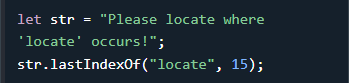

016 Strings Search
Métodos de búsqueda de JavaScript
- String indexOf()
- String lastIndexOf()
- String startsWith()
- String endsWith()
JavaScript String indexOf()
El método indexOf() devuelve el índice (la posición) de la primera aparición de un texto específico en una cadena:
JavaScript cuenta posiciones desde cero.
0 es la primera posición en una cadena, 1 es la segunda, 2 es la tercera, ...
Cadena JavaScript lastIndexOf()
El método lastIndexOf() devuelve el índice de la última aparición de un texto específico en una cadena:
Ambos indexOf() y lastIndexOf() devuelven -1 si no se encuentra el texto:
Ambos métodos aceptan un segundo parámetro como posición inicial de la búsqueda:

Los métodos lastIndexOf() buscan hacia atrás (desde el final hasta el principio), lo que significa: si el segundo parámetro es 15, la búsqueda comienza en la posición 15 y busca hasta el principio de la cadena.


JavaScript String search()
El método search() busca una cadena para un valor específico y devuelve la posición de la coincidencia:
¿Te diste cuenta?
¿ Los dos métodos, indexOf() y search(), son iguales?
¿Aceptan los mismos argumentos (parámetros) y devuelven el mismo valor?
Los dos métodos NO son iguales. Estas son las diferencias:
- El método search() NO puede aceptar un segundo argumento de posición inicial.
- El método indexOf() NO puede tomar valores de búsqueda poderosos (expresiones regulares).
JavaScript String match() (coincidencia)
El método match() busca en una cadena una coincidencia con una expresión regular y devuelve las coincidencias, como un objeto Array.
Ejemplo1>> Busque una cadena para "ain":
Más expresiones regulares en:
Expresiones regulares de JavaScriptSi una expresión regular no incluye el modificador g (para realizar una búsqueda global ), el método match() devolverá solo la primera coincidencia en la cadena.
Una expresión regular es una secuencia de caracteres que forma un patrón de búsqueda.
El patrón de búsqueda se puede utilizar para operaciones de búsqueda y reemplazo de texto.
Sintaxis
- regexp: Requerido. Valor a buscar, como una expresión regular.
- returns : Una matriz que contiene las coincidencias, un elemento para cada coincidencia o
nulo si no se encuentra ninguna coincidencia
Ejemplo 2 >> Realice una búsqueda global que no distinga entre mayúsculas y minúsculas para "ain":
La cadena de JavaScript includes()
El método includes() devuelve true si una cadena contiene un valor especificado.
Sintaxis
- searchvalue: Requerido. La cadena a buscar
- start: Opcional. Predeterminado 0. Posición para iniciar la búsqueda
- returns: Devuelve true si la cadena contiene el valor; de lo contrario, devuelve false
Ejemplo>> :Compruebe si una cadena incluye "world", comenzando la búsqueda en la posición 12:
La cadena de JavaScript startsWith() (comienzaCon)
El método startsWith() devuelve true si una cadena comienza con un valor específico, de lo contrario devuelve false:

Sintaxis

Valores de Paramétros
| Parámetro | Descripción |
|---|---|
| searchvalue | Requerido: El valor a buscar. |
| start | Opcional: Predeterminado 0. La posición para iniciar la búsqueda. |
Ejemplos:
Nota: El método startsWith() distingue entre mayúsculas y minúsculas.
La cadena de JavaScript endsWith() (terminaCon )
El método endsWith() devuelve true si una cadena termina con un valor específico, de lo contrario devuelve false:
Ejemplo: >>Compruebe si una cadena termina con "Doe":


Sintaxis

Valores de Paramétros
| Parámetro | Descripción |
|---|---|
| searchvalue | Requerido: El valor a buscar. |
| length | Opcional: La longitud a buscar. |
Ejemplo: >> Compruebe si los 11 primeros caracteres de una cadena terminan con "world":


Para obtener una referencia completa de String, vaya a :
Referencia completa de cadenas de JavaScript .La referencia contiene descripciones y ejemplos de todas las propiedades y métodos de cadenas.